Spielhilfe v
1.13
Inhalt:
1. Schnellstart
2. Hardware
3. Leistung optimieren
4. Bekannte Probleme
5. Spielbeschreibung
6. Level Hilfe
1.
Schnellstart
|
Bitte wählen Sie beim Start die Option „Play App Config Tool“, um die gewünschte Spielsprache auszuwählen. Spieler können zwischen Deutsch, Englisch, Französisch, Italienisch oder Spanisch wählen.
Erhöhen Sie gleich nach dem Start
des Spiels die Bildschirmauflösung auf „800*600“ (oder
auch höher) – insofern Ihre Grafikkarte dies zulässt. Gehen
Sie dazu in das Menü Optionen/ Grafik. Tipps zur Verbesserung
der Leistung erhalten sie hier.
Im gleichen Menü finden Sie auch die
Einstellung Synch to Screen. Diese
Einstellung (standardmäßig ausgeschaltet) kann die Qualität der
Darstellung erhöhen, wenn ihr Computer über eine leistungsstarke
Grafikkarte verfügt. Details zu dieser Einstellung erhalten sie
hier.
Spielen Sie unbedingt das Tutorial
(die Spieleinführung) zu Beginn des ersten Levels bis zu Ende
durch. Dabei werden Sie über alle „Spielregeln“ informiert. Eine
Beschreibung der Spielelemente erhalten Sie auch hier.
Nach dem Start eines Levels können
Sie mit der ESC–Taste das Spiel jederzeit anhalten oder
eine Einstellungsänderung (z.B. Musiklautstärke) vornehmen.
Zu Beginn des Spiels ist nur der
erste Level anwählbar. Wenn Sie einen Level bis zu Ende gespielt
haben, wird der jeweils darauf folgende Level dauerhaft freigeschaltet.
Sollten Sie während des Spiels an
einer Stelle nicht mehr weiterkommen, so können Sie in der Levelhilfe
nachlesen.
Viel Spaß!
|
2.
Hardware
|
Minimale Systemvoraussetzung:
PC mit 64 MB Hauptspeicher (unter
Win2000/XP 128 MB)
Windows 98/ME/2000/XP (Windows NT wird NICHT unterstützt)
350 MHz Intel Pentium II oder vergleichbar
CD-ROM-Laufwerk
150 MB freier Speicherplatz auf der Festplatte
DirectX 8.1 (auf CD enthalten)
3D Grafikkarte mit 8 MB RAM und DirectX 8.1-kompatible Treiber
Soundkarte (optional)
Tastatur, Maus
Empfohlene Systemkonfiguration :
PC mit 128 MB Hauptspeicher
450 MHz INTEL Pentium III oder vergleichbar
3D Grafikkarte mit 16 MB RAM
|
3.
Leistung optimieren
|
a. Bildschirmauflösung:
Im Menü Optionen/
Grafik können Sie die Bildschirmauflösung verändern. Je niedriger
die Auflösung desto flüssiger wird die Darstellung (= mehr Bilder
pro Sekunde).
Bei Computern,
die älter als zwei Jahre sind, sollte die Bildschirmauflösung NICHT höher als
auf 800*600 eingestellt werden.
Wir empfehlen
die Auflösung auch bei sehr leistungsfähigen Grafikkarten nicht
deutlich über 1024*768 anzuheben und statt dessen lieber „Synch
to Screen“ einzuschalten.
b. Synch to Screen
Mit „Synchronise
to screen“ (Menü: Optionen/ Grafik) wird die Bildwiederholrate
auf die Bildfrequenz des Monitors angepasst.
Mit „Synch to Screen“ findet der Bildwechsel sehr gleichmäßig
statt und die Bilder wirken glatter.
Ohne „Synch to Screen“ können unschöne Kanten im Bild entstehen,
weil der Bildwechsel während des Bildaufbaus stattfindet.
Das „Synch
to Screen“ Feature funktioniert allerdings nur dann reibungslos,
wenn die 3D-Grafikkarte leistungsfähig genug ist, um mit der Bildfrequenz
des Monitors mithalten zu können. Schafft es die Engine während
des Spiel einmal nicht, mit der vorgegebenen Bildfrequenz zu rendern,
so kann das zu „Rucklern“ führen.
Um dieses
Feature optimal nutzen zu können, empfehlen wir daher folgendes:
a. Achten Sie
darauf, dass die Bildwiederholrate ihres Monitors (einstellbar)
nicht deutlich über 70 Hz liegt.
b. Stellen Sie die Bildschirmauflösung nicht zu hoch ein.
Experimentieren
Sie mit dieser Einstellung und finden Sie heraus, welche Art der
Darstellung (mit oder ohne „Synch to Screen“) bei Ihnen am besten
funktioniert.
c. Wolken
Im Menü Optionen/
Grafik können Sie die bewegte Wolkenschicht in den Leveln
ein- oder ausschalten.
Ohne Wolken wird, besonders bei älteren Grafikkarten, die Darstellung
deutlich flüssiger.
|
4.
Bekannte Probleme
|
Grundsätzlich sollten Sie immer
die neuesten Treiber (Grafikkarte, Soundkarte, etc.) installiert haben,
die Sie kostenlos von den jeweiligen Herstellern über das Internet
erhalten können.
* Taskwechsel kann unter Umständen
zu Abstürzen führen. Beenden Sie daher stets das Spiel, bevor
sie eine andere Software starten.
* Punktezählung: Je nach Leistung
des Computers kann es zu Schwankungen bei der Punktezählung
kommen. Die Punkteergebnisse zwischen zwei Computern mit stark
abweichender Leistung ist daher nur bedingt vergleichbar.
Die Abweichungen sind jedoch
nur sehr gering!
* In sehr seltenen Fällen kann
es vorkommen, dass im Menü „Bildschirmauflösung“ eine
Auflösung angeboten wird, die von der Grafikkarte gar nicht
unterstützt wird. Sollten Sie eine Auflösung gewählt
haben, die dazu führt, dass der Monitor schwarz bleibt, so
empfehlen wir, das Spiel zu deinstallieren und anschließend neu
zu installieren.
Alternativ können Sie auch in der Registry den Wert für
„VideoMode“ auf 0 zurücksetzen (nur für Experten!).
* Bei älteren Grafikkarten und
Laptop-Grafikkarten (Beispiel: S3 Savage) kann es bei der Darstellung
von Text zu Darstellungsfehlern (starkes Flackern o.ä.) kommen.
Das gleiche gilt für Grafikkarten, die auf einem Vodoo-Chip
basieren. Hinweis: Sollten Sie beim Start des ersten Levels den
Einführungstext nicht lesen können, so können Sie
(nach dem der Level geladen wurde) mit der "Q"-Taste
die Einführung überspringen.
* Laptop: Sollten Sie trotz großem
Hauptspeicher (> 64 MB) nur über eine 8 MB Grafikkarte
verfügen (z.B. auf einem Laptop), so kann es zu Performance-Problemen
oder Darstellungsfehlern kommen. Wir empfehlen in diesem Fall
die Dateien aus dem Ordner "Textures/sky_low" in den
Ordner "Textures/sky" zu kopieren (alle Dateien
überschreiben!).
* Sollte es
immer beim Abspielen von Musik (immer beim Start eines Musikstücks)
zu Rucklern kommen, so können Sie folgendes versuchen:
a. Setzen Sie die Musiklautstärke auf 0 (Optionen/ Sound).
Dann sollten die Ruckler in jedem Fall verschwunden sein!
b. Wenn Sie auf Musik nicht verzichten wollen, dann gehen Sie
in das Installationsverzeichnis des Spiels und kopieren alle Sounds
aus dem Ordner „Sounds_low“ in den Ordner „Sounds“ (alle Dateien
überscheiben!).
|
5.
Spielbeschreibung
|
a. Einleitung
Ballance ist ein Geschicklichkeits-
und Denkspiel, bei dem es darum geht, eine Kugel durch ein schwebendes
Labyrinth zu steuern. Ziel des Spiels ist es, das Ende des jeweiligen
Levels zu erreichen, ohne (allzu oft) herunterzufallen.
Haben Sie einen Level erfolgreich
durchfahren, so wird der darauf folgende Level freigeschaltet.
Einmal freigeschaltete Level können (in beliebiger Reihenfolge)
erneut gespielt werden.
b. Steuerung und Kamera
Bewegung:
Die Kugel wird mit der Tastatur gesteuert - und zwar standardmäßig
mit den Pfeiltasten "Vorwärts", "Rückwärts",
"Rechts" und "Links".
Im Menü Optionen/ Steuerung
können Sie die Steuerungstasten beliebig konfigurieren.
Ansicht:
Die Pfeiltasten "Rechts" und "LInks" haben
eine doppelte Funktion:
Wenn Sie die Umschalt-Taste (Shift) gedrückt halten,
dann können Sie mit den Pfeiltasten "Rechts" und
"Links" die Kamera-Ansicht in 90-Grad-Schritten drehen.
Benutzen Sie dieses Feature häufig, um sich besser zu orientieren.
Entspricht die Drehrichtung
nicht Ihrer Erwartung, so können Sie im Menü Optionen/
Steuerung mit der Einstellung "Drehung umkehren?" die
Drehrichtung invertieren.
Mit der Leertaste können
Sie die Ansicht zusätzlich anheben.
|
|
c. Transformatoren
Unterwegs finden Sie sogenannte Transformatoren
(„Trafos“), mit deren Hilfe sich das Material des Balles ändern
lässt.
Ein Stein-Trafo verwandelt den Ball in einen Steinball, ein Holz-Trafo
(siehe Bild) in einen Holzball, etc. Für jedes Material gibt es
eine entsprechende Sorte Trafos. Die Art des Trafos erkennen Sie an der Art des
Feldes, auf dem der Trafo steht.
Je nach Material verändern sich auch die physikalischen Eigenschaften
des Balles.
|
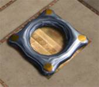
|
|
d. Checkpoints
Während der Fahrt durch einen Level
passieren Sie mehrere Checkpoints.
Fallen Sie während des Spielens in den „endlosen Abgrund“ so wird
Ihnen ein Leben abgezogen und sie werden auf den letzten durchfahrenen
Checkpoint zurückgesetzt.
Haben Sie alle Leben verloren, so müssen Sie den Level wieder
von vorne beginnen.
|
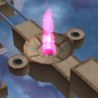
|
|
e. Extra Leben
Sie beginnen jeden Level mit 3 Extra-Leben.
Die Anzahl der verbliebenen Leben erkennen Sie an den silbernen
Bällen unten rechts im Bild.
Unterwegs können Sie jedoch auch Extra-Leben (Bild rechts) aufsammeln
und so weitere Leben hinzugewinnen.
|
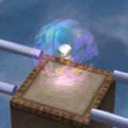
|
|
Die Leben-Extras erscheinen (anders
als die Punkte-Extras) immer wieder neu, wenn man einen Levelabschnitt
zum zweiten (oder dritten, oder vierten ...) Mal fahren muss.
|
|
f. Extra Punkte
Sie beginnen jeden Level mit 1000
Zeitpunkten, die mit einer Rate von 2 Punkten pro Sekunde abnehmen.
Je schneller Sie einen Level beenden, desto mehr Punkte werden
Ihnen am Ende gutgeschrieben.
Ihr aktueller Punktestand wird unten links im Bild angezeigt.
Unterwegs können Sie auch noch Extra-Punkte (Bild rechts) aufsammeln,
die Ihnen zu Ihren Zeitpunkten dazuaddiert werden. Jedes Punkte-Extra
ist 220 Punkte wert.
|
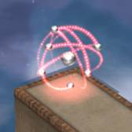
|
|
Jedes Punkte-Extra kann nur einmal
aufgelesen werden!
Sammeln Sie alle noch hinter Ihnen herfliegende Punkte ein, bevor
Sie über einen Checkpoint fahren, da diese sonst verschwinden!
|
|
g. Highscore
Am Ende eines Levels werden alle
Punkte zusammengerechnet.
Die Gesamtpunktzahl eines Level errechnet
sich aus:
- dem Levelbonus (je nach
Level 100 – 1000 Punkte)
- den verbliebenen Zeitpunkten
- den verbliebenen Extra-Leben (200 Punkte pro Leben)
Erreichen Sie einen Platz unter den
besten 10 Spielern (eines Levels) so können Sie sich anschließenden
in den Highscore eintragen.
|
6.
Level Hilfe
Grundsätzliches:
- Mit ESC kommen Sie in das Pausen-Menü. Von hier aus können Sie alle
Einstellungen vornehmen, den Level neu starten oder den Level verlassen.
- Versuchen Sie sich stets eine Übersicht zu verschaffen und
analysieren Sie die Lage. Drehen Sie deshalb oft die Ansicht (Umschalt + Pfeile Rechts/Links), und benutzen Sie die Übersichts-Taste (Leertaste).
- Haben Sie sich einmal in eine ausweglose Situation manövriert,
so müssen sie freiwillig herunterspringen, um zum letzten Checkpoint
zurückgesetzt zu werden.
Jeder Levelabschnitt wird nach einem Absturz
wieder in seinen ursprünglichen Zustand versetzt.
- Punkte-Extras können jeweils nur einmal aufgesammelt werden.
- Leben-Extras erscheinen auch nach einem Absturz immer wieder.
Tipps und Lösungen für die einzelnen Level:
Level
1
|
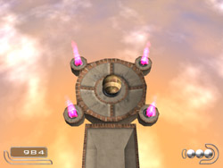
|
Wenn Sie die
Spieleinführung am Anfang absolviert haben, sollte Ihnen
dieser Level keinerlei Probleme bereiten.
Denken Sie daran die Ansicht öfters zu drehen, um einen besseren
Überblick zu bekommen.
Hinweis:
In diesem Level ist ein Punkte-Extra versteckt!
|
Level
2
|
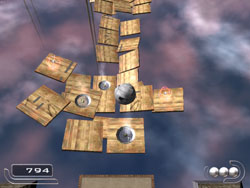
|
Geschicklichkeitslevel
!
Keine
Angst vor Ventilatoren!
Fahren Sie auf den Ventilator, und warten Sie bis Sie oben angekommen
sind. Während des Aufsteigens keine hektischen Steuerbewegungen
machen. (Der Luftstrom lässt sie nur aufsteigen, er drückt
den Ball aber nie zur Seite.) Lassen Sie sich Zeit.
Schwebt der Ball erst einmal sicher auf dem Luftstrom, so kann
er auch nicht herunterfallen.
Beobachten Sie den Schatten, um die Position Ihres Balles besser
einschätzen zu können. Drehen Sie die Ansicht um Abstand
und Sprungrichtung richtig einschätzen zu können.
|
Level
3
|
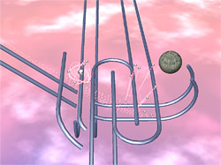
|
Abschnitt 02 :
Wer bremst, verliert!
Beim Herunterfahren auf maximale
Geschwindigkeit beschleunigen. Dann (nach dem Sprung) schön
vorsichtig um die Kurven fahren - zur nächsten Abfahrt. Ist
im Grunde sehr einfach.
Um die Extrapunkte zu erhalten, muss man in der Kurve (kurz vor dem Abheben) die Schubrichtung
umkehren. Drehen Sie dazu die Kamera seitlich, um einen besseren
Überblick zu bekommen.
|
|
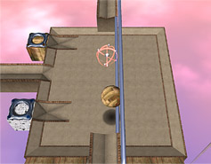
|
Abschnitt
03 :
Bei den seitlichen Schienen drückt man zwei Tasten auf einmal.
In dieser Perspektive (siehe Bild) drückt man sich erst rechts
in die Schiene und fährt dann nach vorne.
Vorsicht beim Papierball. Wenn Sie zu schnell fahren, kann er
aus der Führung springen! Der Holzball ist hier die bessere
Wahl.
Übrigens: Sind Sie erst einmal in der Führung, so können
Sie auch jederzeit anhalten oder umkehren - so lange Sie wenigstens eine Taste gedrückt halten.
An dieser Stelle können Sie gefahrlos alles ausprobieren.
|
Level
4
|
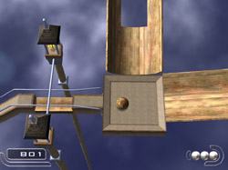
|
Abschnitt
03:
Ein Rätsel:
Nur nicht zu schnell herunterspringen! Da kommen Sie sonst nicht
mehr heraus!
Bauen Sie sich eine Brücke aus Steinbällen.
Wie viele
Steinbälle passen wohl in die Vertiefung?
Hinweis:
Steinbälle lassen sich besser (und schneller) einzeln schieben!
|
|
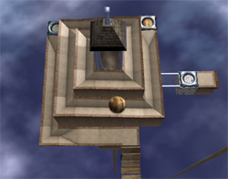
|
Abschnitt 04:
Man muss auch mal springen, aber immer an der richtigen Stelle!
Steinbälle sind zu schwer für
Hängebrücken und ein Ventilator kann auch manchmal hinderlich
sein.
|
|
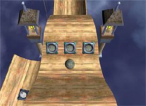
|
Abschnitt
05:
Hier ist ein Rätsel.
Endloses Hin-und Her-Schwingen bringt nichts. Das Problem lässt
sich nur mit der richtigen Strategie lösen.
Lösung:
Sie müssen bereits ein Steinball sein, wenn Sie auf den "Ausgang" zurollen,
dann werden Sie auch nicht von den Trafos eingefangen.
Verwandeln Sie sich auf der mittleren "Welle" (nicht im Bild) in einen Steinball.
Rollen Sie dann mit vollem Schwung auf den "Ausgang"
zu und weichen dabei dem Holztrafo aus - ohne anzuhalten! Wenn
Sie dann mit vollem Schwung (als Steinball) weiterrollen, schaffen
Sie auch problemlos den letzten Anstieg (siehe Bild), ohne von
den Steintrafos eingefangen zu werden.
|
Level
5
|
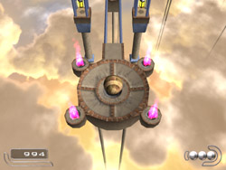
|
Dieser Level
sollte Ihnen keinerlei Probleme bereiten.
Verlieren Sie im ersten Abschnitt nicht den Überblick!
Schwere Kisten verschiebt man am besten mit dem Steinball!
|
Level
6
|
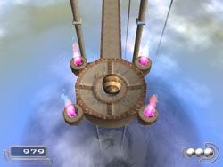
|
Keine schweren
Rätsel in diesem Level!
|
Level
7
|
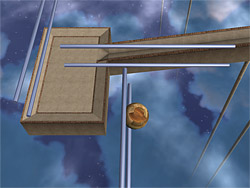
|
Abschnitt 01:
Nichts für Angsthasen!
Die seitliche Schienenkombination erfordert das Drücken von zwei
Tasten gleichzeitig. Nehmen Sie die Schienen mit Schwung. Auch
beim Wechsel auf die nächste Schiene nicht vom Gas gehen.
Halten Sie einfach die Tasten Vorwärts und Links (in Bezug auf das Bild) die ganze Zeit über gedrückt.
|
|
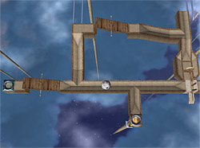
|
Abschnitt
03:
Entscheiden Sie sich für den passenden Trafo.
Manchmal muss man auch zurückfahren, wenn man nicht gleich
den richtigen Ball hat.
|
|
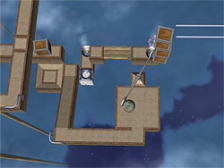
|
Abschnitt
05:
Gewusst wie!
Unter Kisten kann sich auch mal was verstecken.
Lösung:
Springen Sie mit dem Steinball zuerst auf die kleine Plattform.
Fahren Sie dann vorsichtig zu dem Drehkreuz herauf, und stoßen
Sie die Kisten herunter. Dann legen Sie die kleine Brücke
um.
Erst wenn Sie beides getan haben (!), fahren Sie zu dem Papiertrafo
herunter und verwandeln sich.
|
Level
8
|
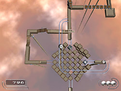
|
Abschnitt
02:
Ein Rätsel, das auch etwas
Geschicklichkeit erfordert.
Fahren Sie (als Holzball) in die Mitte des Würfels und nehmen die linke Abzweigung.
Fahren Sie über die Hängebrücke und über die Wippe und drücken den Schieber beiseite.
Dann fahren Sie zurück zum Steintrafo (im Bild nach oben) und schubsen die Kisten herunter.
Dann fahren Sie wieder zurück und verwandeln sich in einen Papierball (im Bild rechts),
schweben am Ventilator hoch, fahren über die Schienen und springen (hinter dem Steintrafo) wieder herunter.
Über die Kipp-Felder können Sie als Papierball diesen Abschnitt verlassen.
|
|
|
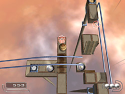
|
Abschnitt
03 a:
Sehr einfach! Springen Sie (als Holzball) links von der Brücke zum Papiertrafo herunter.
Als Papierball schweben Sie hoch und UNTER den Schienen nach rechts zum anderen Ventilator.
Dann springen Sie (im Bild unten rechts) zur Plattform herüber, drücken sich in die seitlichen Schienen
und fahren (vorsichtig - der Papierball ist unrund) hinüber auf die andere Seite
(im Bild nach oben) zum Holztrafo. Als Holzball fahren Sie an der Schiene zur Hälfte
wieder zurück und fahren die kleine Schräge zur Klappbrücke herüber und legen sie um.
Auf der Brücke können Sie dann AUF die Schienen fahren und diesen Abschnitt verlassen (im Bild links).
|
|
|
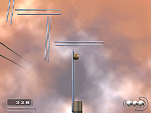
|
Abschnitt
03 b:
Siehe Level 7 Abschnitt 01.
|
|
|
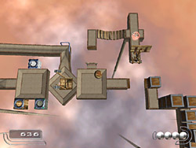
|
Abschnitt
05:
Sie müssen die Schaukel der Reihe nach erst als Holz-, dann als Stein-
und zuletzt als Papierball überqueren und zum Wechseln der Bälle immer
wieder zurück fahren.
Erst müssen Sie die T-Brücke umlegen, dann die Kisten
beiseite schieben und schließlich den Levelabschnitt als Papierball verlassen.
Hinweis: Nutzen Sie die Gelegenheit, an der Schaukel mit allen Bällen zu üben.
Hier werden Sie bei missglückten Versuchen noch aufgefangen!
|
Level
9
|
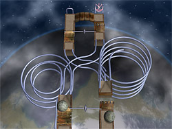
|
Abschnitt
01:
Wettrennen!
Man
muss diese Schienen mit sehr viel Schwung fahren, dann kann man
auch nicht herunterfallen. Drücken Sie dazu in schneller
Folge die Bewegungstasten im Uhrzeigersinn. Hierbei kommt es auf
das richtige Timing an! Wechseln Sie die Schubrichtung zu früh
oder zu spät, dann erreichen Sie nicht die nötige Geschwindigkeit.
Versuchen Sie vor dem anderen Steinball unten zu sein.
Für besonders Schnelle gibt es auch noch ein extra Punkte-Extra!
|
|
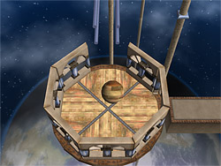
|
Abschnitt
05:
Achtung Lift!
Beobachten Sie genau die Umgebung des Lifts. Man muss nicht immer
alle Wände umstoßen. Manchmal kann man auch zu hoch fahren!
|
|
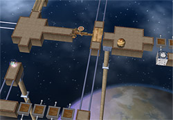
|
Abschnitt
05:
Achtung versteckter Trafo (rechts im Bild)!
|
Level
10
|
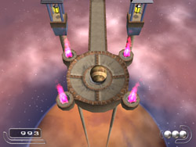
|
Wenn Sie bis
hierher gekommen sind, dann sollte Ihnen auch dieser Level keine
größeren Probleme bereiten.
|
Level
11
|
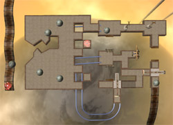
|
Abschnitt
01:
Was passiert, wenn man die Steinbälle auf die untere Ebene stößt?
Lösung:
Schieben Sie zuerst einen Steinball auf die rechte Schiene (im
Bild unten). Dann fahren Sie selbst die mittlere Schiene herunter,
legen die beiden Klappbrücken rechts und links und dann die
T-Brücke geradeaus um.
Erst danach springen Sie auf die nächst tiefere Ebene und
drücken den "Schieber" zu Seite.
Danach können sie wieder hoch fahren, vorbei am "Schieber",
der von dem anderen Steinball aus dem Weg geräumt wurde.
Dann einmal herum und an den schwingenden Säcken vorbei.
Schieben sie den Steinball zur Seite und verlassen diesen Abschnitt
mit viel Schwung über die Holzrampe (unten rechts im Bild).
|
|
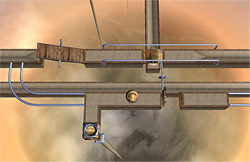
|
Abschnitt
02 a:
Hier ist ein Rätsel!
Heben Sie öfters mal die Ansicht an, um sich einen Überblick zu
verschaffen.
Lösung:
Sie müssen zum richtigen Zeitpunkt umkehren! Verwandeln Sie
sich zuerst in einen Holzball und fahren Sie gegen den Uhrzeigersinn
(in Bezug auf das Bild) 2 mal über die 2-Klappen-Brücke
- erst unten dann oben. Dann fahren Sie über die Wippe und
sorgen dafür, dass Sie sie auch umgelegen. Dann fahren Sie
noch EINMAL über die 2-Klappen-Brücke und kehren nun
um! Fahren Sie zurück (im Uhrzeigersinn ) über die Wippe.
Die obere Hälfte der 2-Klappen-Brücke steht nun offen
und sie können zu dem Extra herunter springen und diesen
Abschnitt verlassen.
|
|
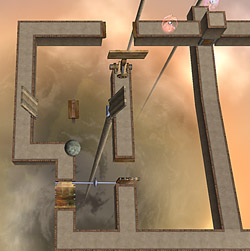
|
Abschnitt
02 b:
Hier ist ebenfalls ein Rätsel!
Passen Sie auf, dass Sie sich nicht den Weg abschneiden.
Lösung:
Nehmen
Sie zuerst den linken Weg und legen die eine Brücke um. Fahren
Sie dann zurück und legen die 2-Klappen-Brücke um. Der
Rest liegt auf der Hand.
Vergessen
Sie nicht auch die Kiste unter dem Fall-Stein wegzuschieben (im
Bild oben rechts). Tun Sie das sehr vorsichtig, so dass die Kiste
auf der anderen Seite liegen bleibt. Dann können Sie später
darauf fahren und das Extra holen.
|
|
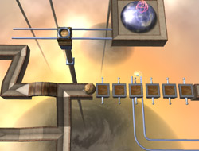
|
Abschnitt
04:
Um diesen Abschnitt verlassen zu können, müssen Sie
sich früher oder später in einen Papierball verwandeln
(eher später).
Tipp: Manchmal muss man auch größere Sprünge wagen.
Vor allem wenn´s so schön klingt ...
Bild:
Um auf die Schienen zu gelangen (unten rechts im Bild), fahren
sie mit Schwung über die ersten 3 Kipp-Platten. Dann lassen
Sie sich einfach auf die Schienen fallen und holen sich noch schnell
das Extra-Leben. Von hier aus geht´s aufwärts bis zum
gesuchten Papier-Trafo.
|
|
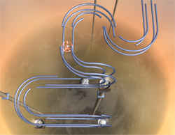
|
Abschnitt
05:
Dieses Schienengewirr ist eine Kombination aus „normalen“ Schienen
und seitlichen Schienen.
Hier kommt
es darauf an, im richtigen Augenblick die Seite zu wechseln. Lassen
Sie sich Zeit und bleiben auch mal ruhig eine Weile an einer Seite
stehen (bei gedrückter Taste). Machen Sie sich bewusst, wann
Sie die Schubrichtung ändern müssen. Geschwindigkeit
ist hier nicht der Schlüssel zum Erfolg!
|
|
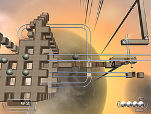
|
Abschnitt
06:
Borg-Cube-Rätsel
Erst alles genau ansehen und nicht zu schnell herunter springen.
In der Mitte befindet sich eine lange Schiene, auf die Sie fahren
können, um sich alles genau anzusehen.
Lösung:
Schieben sie eine Steinkugel durch eines der Löcher, so dass
sie auf die untere Schiene fällt. Dieser Kugel drückt
den "Schieber" beiseite.
Das gleiche machen Sie mit einer zweiten, die auf die andere Schiene
fällt und die 2-Klappen-Brücke umlegt.
Dann rollen (springen) Sie vorsichtig die "Treppe" herunter
(sammeln alle Extras auf) und lassen sich auf die (obere) Schiene
fallen. Dann rollen Sie auf der Schiene bis zu der Stelle zwischen
den beiden Wippen. Sie fahren (in Bezug auf das Bild) über
die rechte und stoßen die Kisten herunter. Fahren dann zurück
über beide Wippen bis in das Innere des Würfels. Am
anderen Ende befindet sich ein Papier-Trafo, den Sie benutzen.
Als Papierball rollen Sie anschließen wieder über beide
Wippen zurück und springen in das Loch mit dem Extra. Der
Rest ist einfach ...
|
Level
12
|
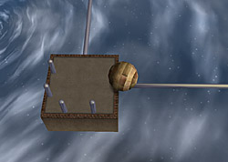
|
Abschnitt
02:
Allgemeiner Ratschlag
für Mono-Rails (einzelne Gleise): Versuchen Sie nicht ohne
Hilfe auf eine Mono-Rail zu fahren.
Stattdessen: Suchen Sie nach Objekten, die dem Ball als Führungshilfe
dienen können. Diese Pfosten z.B. sind dafür ideal.
Drücken Sie den Ball zwischen die Pfosten, bis er sich stabilisiert
hat. Dann fahren Sie einfach los!
Machen Sie auf Mono-Rails niemals Lenkbewegungen.
Einmal auf Richtung gebracht, kann Ihnen nichts passieren.
Vorsicht bei Kurven:
Fahren Sie hier nicht zu schnell, sonst kommen Sie aus der Führung.
|
|
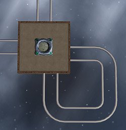
|
Abschnitt
03 a:
Lesen Sie noch mal die darüber liegende Hilfe für Abschnitt
02 nach!
Normale Gleise sind im Grunde auch nichts anderes als zwei nebeneinander
liegende Mono-Rails.
Lösung:
Diese kleine Schlaufe ist keineswegs sinnlos, sondern dient ebenso
als Führungshilfe. Fahren Sie (als Steinball) auf die Schiene
unten rechts und verlassen Sie mit viel Schwung (nach links oder
nach oben). Machen Sie keine Lenkbewegung und fahren weiter über
die Plattform bis auf die angrenzenden Gleise (oben oder links).
Sie können dann auf einer einzelnen Schiene (Mono-Rail) fahren.
Damit kommen Sie weiter.
Wenn Sie kurz zurückfahren, können Sie auch das Extra
aufsammeln, an dem Sie zuerst vorbeifahren mussten.
|
|
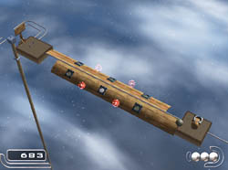
|
Abschnitt
03 b:
Schwieriges Rätsel, das auch viel Geschicklichkeit erfordert!
Lösung:
Sie kommen als Steinball von links und transformieren sich auf
der Plattform gleich in einen Holzball.
Dann fahren Sie vorsichtig auf die Holzröhre und stoßen
den Steinball herunter.
Wenn Sie die Punkte Extras aufsammeln wollen, dann fahren Sie
bis zur Mitte und rollen auf den Papiertrafo. Als Papierball können
Sie alle Extras aufsammeln ohne herunter zu fallen. Fahren Sie
wieder zurück und verwandeln sich wieder in einen Holzball.
Fahren Sie ans andere Ende der Holzröhre bis zur Plattform
mit der T-Brücke, die Sie als Holzball nicht umlegen können.
Achtung: Vermeiden Sie unter allen Umständen eine Berührung
mit einem der 5 Steintrafos!
Der Rest ist einfach!
Stabilisieren Sie sich zwischen den Pfosten und fahren auf der
Mono-Rail den GANZEN Weg zurück bis zu Abschnitt 03 a (außerhalb
des Bildes/ siehe Hilfe darüber). Dort verwandeln Sie sich
wieder in einen Steinball, zentrieren sich wieder und fahren
wieder zurück (auf der Mono-Rail über die Holzröhre) bis zur T-Brücke, die Sie nun umlegen
können.
|
|
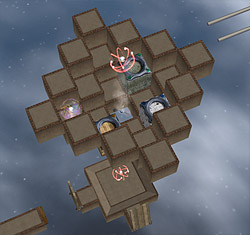
|
Abschnitt
04:
Mit etwas Geduld sollte dieser Abschnitt zu bewältigen sein.
Hinweis: Mit einem schweren Ball (Holz/ Stein)
kann man durch Ventilatoren auch durchfallen. Manchmal ist das
der beste Weg.
|
|
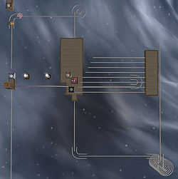
|
Abschnitt
07:
Sehr schweres Rätsel, das jedoch wenig Geschicklichkeit erfordert.
Wenden Sie alles an, was Sie bisher über Mono-Rails gelernt
haben.
Lösung:
Fahren
Sie zuerst auf die mittlere Plattform und verwandeln sich in einen
Steinball. Stabilisieren Sie sich an den obere beiden Pfosten
und fahren mit vollem Schub nach unten, springen über das
Loch und fahren (ohne jede Lenkbewegung!) geradeaus weiter auf
die Mono-Rail. Dann fahren Sie die Schnecke hoch auf die obere
Plattform und räumen erst mal alle Extras ab.
Dann stabilisieren Sie sich an den Pfosten und fahren auf die
5. Mono-Rail (von oben). Am Ende springen Sie vorsichtig herunter
und geben etwas Rückwärtsschub, so dass Sie nicht in
den Holztrafo rollen (Wichtig!). Dann rollen Sie wieder rückwärts
(im Bild nach rechts) auf die Mono-Rail - sie sind genau zentriert!
Vermeiden Sie die ganze Zeit über jegliche Lenkbewegung.
Sie fahren am Ende der Rail um die Kurve und wieder zur Plattform
zurück. Dann stehen Sie exakt zentriert als Steinball der
nach oben gebogenen Mono-Rail gegenüber. Mit etwas Schwung
fahren Sie auf diese "Brücke" und stoßen
alle Kisten herunter. Vorsicht: Nicht zu viel Schwung, sonst können
Sie nicht rechtzeitig bremsen.
Der Rest ist einfach: Sie verwandeln sich in einen Papierball
und schweben zur großen Plattform zurück. Dort verwandeln
Sie sich in einen Holzball, fahren nach oben, zentrieren sich
und verlassen die Plattform nach oben. Dann noch zwei 90 Grad
Kurven. Mit viel Schwung fahren Sie auf der Mono-Rail auf den
Papier-Trafo zu und springen hinüber. Ohne zu lenken fahren
Sie auf der anderen Seite weiter zum nächsten Checkpoint.
|
|
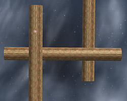
|
Abschnitt
08:
Sie haben´s fast geschafft - dies ist die letzte Prüfung
- und die ist wirklich schwer !
Sie müssen sich als Steinball auf die "Holzröhren"
fallen lassen.
Versuchen Sie nicht, mit zu hoher Geschwindigkeit zu fahren.
Nehmen sie sich Zeit zum Stabilisieren.
Holen Sie sich immer erst das Lebens-Extra am Ende der ersten
Strecke.
Sie können es schaffen !!!!
|
|